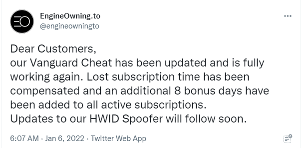
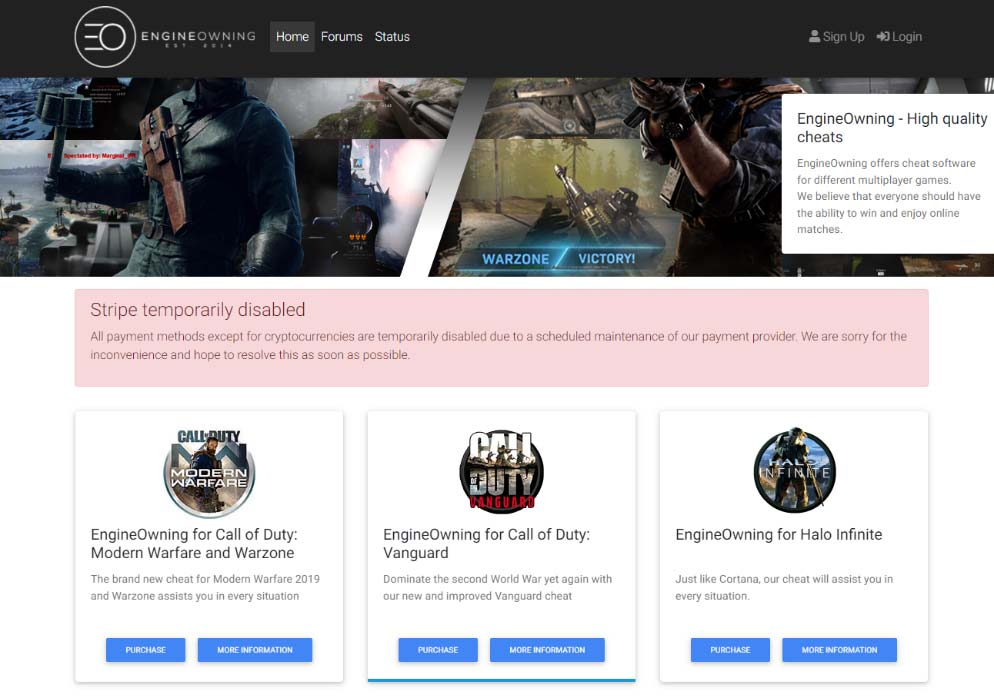

Case 2:22-cv-00051-MWF-JC Document 9 Filed 01/13/22 Page 1 of 25 Page ID #:58
1 MARC E. MAYER (SBN 190969)
mem@msk.com
2 MARK C. HUMPHREY (SBN 291718)
mxh@msk.com
3 GENEVIEVE L. JAVIDZAD (SBN 336138)
glj@msk.com
4 MITCHELL SILBERBERG & KNUPP LLP
2049 Century Park East, 18th Floor
5 Los Angeles, CA 90067-3120
Telephone: (310) 312-2000
6 Facsimile: (310) 312-3100
7 Attorneys for Activision Publishing, Inc.
8
UNITED STATES DISTRICT COURT
9
CENTRAL DISTRICT OF CALIFORNIA
10
11 ACTIVISION PUBLISHING, INC., a CASE NO. 2:22-cv-00051- MWF (JCx)
12 Delaware corporation,
[Assigned to Judge Michael Fitzgerald]
13
Plaintiff,
14
v.
EX PARTE APPLICATION OF
PLAINTIFF ACTIVISION
15 ENGINEOWNING UG, a German
PUBLISHING, INC. FOR
corporation, CMM HOLDINGS S.A., a
LIMITED EARLY DISCOVERY
16 German corporation, VALENTIN
TO IDENTIFY DOE
RICK, an individual, LEONARD
DEFENDANTS
17 BUGLA, an individual, LEON
FRISCH, an individual, IGNACIO
18 GAYDUCHENKO, an individual,
MARC-ALEXANDER RICHTS, an
Complaint Filed: January 4, 2022
19 individual, ALEXANDER KLEEMAN,
an individual, and DOES 1-50,
20 inclusive,
21
Defendants.
22
23
24
25
26
27
Mitchell
28
Silberberg &
Knupp LLP
EX PARTE APPLICATION OF PLAINTIFF ACTIVISION PUBLISHING, INC. FOR LIMITED EARLY
13865460.2
DISCOVERY TO IDENTIFY DOE DEFENDANTS
Case 2:22-cv-00051-MWF-JC Document 9 Filed 01/13/22 Page 2 of 25 Page ID #:59
1
NOTICE OF EX PARTE APPLICATION
2
PLEASE TAKE NOTICE that Plaintiff Activision Publishing, Inc.
3 (“Plaintiff” or “Activision”) hereby applies ex parte pursuant to Federal Rule of
4 Civil Procedure 26(d) and Local Rule 7-10 for leave to serve fifteen (15)
5 subpoenas necessary for Activision to learn the identities of unnamed or alias
6 “Doe” Defendants in this action and to ensure that all necessary parties have been
7 named in this lawsuit. Copies of the proposed subpoenas are attached as Exhibit 1
8 to the Declaration of Marc E. Mayer, filed concurrently herewith.
9
The Defendants in this lawsuit operate, oversee, provide services for, or
10 otherwise participate in an online business venture called “EngineOwning.” The
11 EngineOwning venture is engaged in the development, sale, distribution,
12 marketing, and exploitation of a portfolio of malicious cheats and hacks (the
13 “Cheating Software”) for popular multiplayer games, especially Activision’s
14 immensely popular Call of Duty series of games (collectively, the “Games”). The
15 Cheating Software enables players to manipulate the Games to their personal
16 advantage, such as by automatically aiming weapons, revealing locations of
17 opponents, and allowing players to see information that otherwise would be
18 obscured. The Cheating Software also includes features that are deliberately
19 designed to thwart Activision’s cheat detection software and to overcome or nullify
20 actions taken by Activision against cheaters, such as “hardware ID spoofers” that
21 mask the identity of a user’s computer. Defendants’ sale and distribution of the
22 Cheating Software has caused and is continuing to cause Activision to lose revenue
23 and to suffer damage to its goodwill and reputation.
24
Activision’s investigation has revealed that in addition to the named
25 Defendants in this case (six individuals and two entities), at least 15 other
26 anonymous individuals are independently and directly engaged in distributing the
27 Cheating Software, maintaining or administering the EngineOwning Website,
Mitchell
28
Silberberg &
2
Knupp LLP
EX PARTE APPLICATION OF PLAINTIFF ACTIVISION PUBLISHING, INC. FOR LIMITED EARLY
13865460.2
DISCOVERY TO IDENTIFY DOE DEFENDANTS
Case 2:22-cv-00051-MWF-JC Document 9 Filed 01/13/22 Page 3 of 25 Page ID #:60
1 providing technical support or assistance, and/or assisting with the development of
2 the Cheating Software. These individuals, who are named as “Doe” defendants
3 (the “Doe Defendants”) engage in unlawful activities using online aliases.
4 Activision thus has been unable to determine the true names and capacities of these
5 individuals or entities prior to filing this lawsuit, and have reason to believe that
6 these individuals will continue to conceal their identities. In order for Activision to
7 obtain the relief it seeks, and to ensure that all appropriate parties are included as
8 Defendants in this lawsuit, expedited third-party discovery is necessary to identify
9 the Doe Defendants as well as any additional unnamed parties.
10
Good cause exists for the requested limited discovery. This case involves
11 violations of Section 1201 of the Digital Millennium Copyright Act, claims for
12 intentional interference with contract, and claims for unfair competition. These
13 claims are supported by law and will easily be proven. Activision has conducted
14 an extensive and diligent investigation and has concluded that (1) subpoenas are
15 necessary to identify the Doe Defendants, and (2) the entities identified in the
16 subpoenas attached hereto are in possession of information that will either disclose
17 the Doe Defendants’ true identities, or lead to the discovery thereof. Accordingly,
18 Activision requests limited early discovery to identify the Doe Defendants and
19 ensure that all such persons or entities are named in the action.
20
This Application is made on an ex parte basis, because if Activision is
21 required to bring a noticed motion, it is likely that it will not obtain the requested
22 information for several months, at the earliest. Activision then would be required
23 to amend its Complaint and locate and serve any new or additional parties. As a
24 result, without the requested expedited relief, this case potentially would not be at
25 issue for many months.
26
This Application is based upon this Notice, the attached Memorandum of
Mitchell
Silberberg &
27 Points and Authorities, the attached supporting Declaration of Marc E. Mayer, the
Knupp LLP
28
3
EX PARTE APPLICATION OF PLAINTIFF ACTIVISION PUBLISHING, INC. FOR LIMITED EARLY
13865460.2
DISCOVERY TO IDENTIFY DOE DEFENDANTS
Case 2:22-cv-00051-MWF-JC Document 9 Filed 01/13/22 Page 4 of 25 Page ID #:61
1 Complaint in this action, and such other and further oral or documentary evidence
2 and legal memoranda as may be presented at or before any hearing on this
3 Application.
4
5 DATED: January 13, 2022
MARC E. MAYER
MARK C. HUMPHREY
6
GENEVIEVE L. JAVIDZAD
MITCHELL SILBERBERG & KNUPP LLP
7
8
By: /s/ Marc E. Mayer
9
Marc E. Mayer (SBN 190969)
Attorneys for Activision
10
11
12
13
14
15
16
17
18
19
20
21
22
23
24
25
26
Mitchell
Silberberg &
27
Knupp LLP
28
4
EX PARTE APPLICATION OF PLAINTIFF ACTIVISION PUBLISHING, INC. FOR LIMITED EARLY
13865460.2
DISCOVERY TO IDENTIFY DOE DEFENDANTS
Case 2:22-cv-00051-MWF-JC Document 9 Filed 01/13/22 Page 5 of 25 Page ID #:62
1
TABLE OF CONTENTS
2
Page
3 MEMORANDUM OF POINTS AND AUTHORITIES ................................................................ 8
4 I.
INTRODUCTION ............................................................................................................... 8
5 II.
STATEMENT OF FACTS .................................................................................................. 9
6 III. ACTIVISION SHOULD BE GRANTED LEAVE TO TAKE LIMITED THIRD
7
PARTY DISCOVERY. ..................................................................................................... 15
8
A.
The Requested Discovery Will Identify Specific Unnamed Individuals Who
are Subject to Jurisdiction in This Court. .............................................................. 17
9
B.
Activision Has Taken Reasonable Steps to Locate and Identify the Unnamed
10
Defendants. ............................................................................................................ 20
11
C.
Activision’s Claims Will Withstand a Motion to Dismiss. ................................... 20
12
D.
The Requested Discovery is Likely to Reveal the Identities of the Doe
13
Defendants. ............................................................................................................ 23
14
E.
The Need for the Requested Discovery Outweighs Any Conceivable
Prejudice to Defendants. ....................................................................................... 23
15
IV.
CONCLUSION ................................................................................................................. 25
16
17
18
19
20
21
22
23
24
25
26
27
Mitchell
28
Silberberg &
5
Knupp LLP
EX PARTE APPLICATION OF PLAINTIFF ACTIVISION PUBLISHING, INC. FOR LIMITED EARLY
13865460.2
DISCOVERY TO IDENTIFY DOE DEFENDANTS
Case 2:22-cv-00051-MWF-JC Document 9 Filed 01/13/22 Page 6 of 25 Page ID #:63
1
TABLE OF AUTHORITIES
2
Page(s)
3
CASES
4 Adobe Sys. Inc. v. One Stop Micro, Inc.,
84 F. Supp. 2d 1086 (N.D. Cal. 2000) .................................................................................... 22
5
American LegalNet, Inc. v. Davis,
6
673 F. Supp. 2d 1063 (C.D. Cal. 2009) ................................................................................... 16
7 Blizzard Ent., Inc. v. Bossland GmbH,
8
2017 WL 7806600 (C.D. Cal. Mar. 31, 2017) ........................................................................ 21
9 Blizzard Ent., Inc. v. Bossland GmbH,
No. SACV161236DOCKESX, 2017 WL 412262 (C.D. Cal. Jan. 25, 2017) ................... 18, 19
10
Blizzard Ent., Inc. v. Joyfun Inc Co., Ltd.,
11
No. SACV191582JVSDFMX, 2020 WL 1972284 (C.D. Cal. Feb. 7, 2020) ......................... 18
12 Blizzard Entertainment Inc. v. Ceiling Fan Software LLC,
13
28 F. Supp. 3d 1006 (C.D. Cal. 2013) ..................................................................................... 22
14 Calder v. Jones,
465 U.S. 783 (1984) ................................................................................................................ 20
15 Core-Vent Corp. v. Nobel Industries AB,
16
11 F.3d 1482 (9th Cir. 1993) ................................................................................................... 20
17 Coupons, Inc. v. Stottlemire,
588 F. Supp. 2d 1069 (N.D. Cal. 2008) .................................................................................. 23
18
19 Craigslist, Inc. v. Naturemarket, Inc.,
694 F. Supp. 2d 1039 (N.D. Cal. 2010) .................................................................................. 18
20 Davidson & Assocs., Inc. v. Internet Gateway,
21
334 F. Supp. 2d 1164 (E.D. Mo. 2004), aff’d, 422 F.3d 630 (8th Cir. 2005) ......................... 22
22 Geddes v. United Fin. Grp.,
559 F.2d 557 (9th Cir. 1977) ................................................................................................... 21
23
24 Gillespie v. Civiletti,
629 F.2d 637 (9th Cir. 1980) ................................................................................................... 16
25 Hallet v. Morgan,
26
296 F.3d 732 (9th Cir. 2002) ................................................................................................... 15
27 Knapp v. Americredit Fin. Servs., Inc.,
204 F.R.D. 306 (S.D. W.Va. 2001) ......................................................................................... 23
Mitchell
28
Silberberg &
6
Knupp LLP
EX PARTE APPLICATION OF PLAINTIFF ACTIVISION PUBLISHING, INC. FOR LIMITED EARLY
13865460.2
DISCOVERY TO IDENTIFY DOE DEFENDANTS
Case 2:22-cv-00051-MWF-JC Document 9 Filed 01/13/22 Page 7 of 25 Page ID #:64
1
TABLE OF AUTHORITIES
(continued)
2
Page(s)
3
Maclin v. Paulson,
4
627 F.2d 83 (7th Cir. 1980) ..................................................................................................... 17
5 Munz v. Parr,
6
758 F.2d 1254 (8th Cir. 1985) ................................................................................................. 16
7 NobelBiz, Inc. v. Wesson,
2014 WL 1588715 (S.D. Cal. Apr. 18, 2014) ......................................................................... 16
8
Rose v. Abraham,
9
2008 WL 3540542 (E.D. Cal. Aug. 13, 2008) ........................................................................ 16
10 Semitool, Inc. v. Tokyo Electron Am., Inc.,
11
208 F.R.D. 273 (N.D. Cal. 2002) ...................................................................................... 16, 24
12 Skout, Inc v. Jen Processing, Ltd,
2015 WL 224930 (N.D. Cal. Jan. 15, 2015) ................................................... 16, 17, 18, 20, 23
13 UMG Recordings, Inc. v. Doe,
14
2008 WL 2949427 (N.D. Cal. July 30, 2008) ......................................................................... 16
15 UMG Recordings, Inc. v. Doe,
16
2008 WL 4104214 (N.D. Cal. Sept. 3, 2008) .................................................................... 17, 24
17 Valentin v. Dinkins,
121 F.3d 72 (2d Cir. 1997) ...................................................................................................... 16
18
STATUTES
19 17 U.S.C.
20
§ 1201 .................................................................................................................................. 3, 21
§ 1201(b)(1) ....................................................................................................................... 20, 21
21 Cal. Bus. & Prof. Code
22
§ 17200 et seq. ......................................................................................................................... 22
23
OTHER AUTHORITIES
24 Fed. Rule Civ. Proc. 26(d) ............................................................................................................... 2
25
26
Mitchell
Silberberg &
27
Knupp LLP
28
7
EX PARTE APPLICATION OF PLAINTIFF ACTIVISION PUBLISHING, INC. FOR LIMITED EARLY
13865460.2
DISCOVERY TO IDENTIFY DOE DEFENDANTS

Case 2:22-cv-00051-MWF-JC Document 9 Filed 01/13/22 Page 8 of 25 Page ID #:65
1
MEMORANDUM OF POINTS AND AUTHORITIES
2 I.
INTRODUCTION
3
The Defendants in this lawsuit have built a profitable business based on the
4 development, promotion, and sale of software products and related services that
5 enable members of the public to cheat in the immensely popular Call of Duty series
6 of video games (the “Cheating Software”). Plaintiff Activision Publishing, Inc.
7 (“Activision’) is the owner of copyright in the Call of Duty games and maintains
8 the competitive online multiplayer aspects of the games.
9
Like many unlawful online business ventures, Defendants operate in the
10 shadows, using anonymous online aliases, private chat channels, fictitious shell
11 corporations, Internet proxy or masking services, and online financial services in
12 order to hide their identities and minimize their online footprints. In the meantime,
13 under the (mistaken) belief that they cannot be found, Defendants have expressed
14 open disdain for Activision’s enforcement efforts, including by creating new
15 cheating products for Activision’s just-released game Call of Duty: Vanguard,
16 updating their existing products to thwart Activision’s cheat detection efforts, and
17 mocking Activision’s counsel by creating fake online accounts in their name.
18 Indeed, just days after this lawsuit was filed, Defendants updated and improved the
19 Cheating Software, announcing this development on their Twitter feed:
20
21
22
23
24
25
26
Defendants’ conduct has caused, and is continuing to cause, significant
27 monetary and reputational harm to Activision and its products. Accordingly, by
Mitchell
28
Silberberg &
8
Knupp LLP
EX PARTE APPLICATION OF PLAINTIFF ACTIVISION PUBLISHING, INC. FOR LIMITED EARLY
13865460.2
DISCOVERY TO IDENTIFY DOE DEFENDANTS
Case 2:22-cv-00051-MWF-JC Document 9 Filed 01/13/22 Page 9 of 25 Page ID #:66
1 this motion, Activision requests leave of court to issue subpoenas designed to elicit
2 the identities of certain specific individuals whose online aliases have been
3 disclosed in the Complaint and/or who own and or operate the corporate defendant
4 in this action, EngineOwning UG.
5
Good cause exists for this request. The Doe Defendants are specific
6 individuals who are actively and deliberately engaged in conduct intended to harm
7 Activision. For months, Activision has been working to obtain the names of the
8 Doe Defendants. While Activision has been able to identify some of the
9 participants in the EngineOwning venture, it has not been successful in locating the
10 Doe Defendants. Thus, the only way to ensure that all necessary individuals are
11 included in this lawsuit (and have been served) is to seek circumscribed early
12 discovery. The discovery sought by this Ex Parte Application should disclose
13 information that will enable Activision to uncover the real names and locations of
14 the primary individuals responsible for the operation of the EngineOwning
15 Website and the development, promotion, and sale of the Cheating Software.
16
There will be no prejudice to any of the Defendants (named or unnamed) if
17 the requested discovery is permitted. To the contrary, Activision would be entitled
18 to this discovery in the normal course. In addition, the subpoenaed party will give
19 notice to any impacted party, who will have a full opportunity to object or move to
20 quash, if he or she so elects. (And, of course, any Doe Defendant who is identified
21 and added as a named defendant will have a full opportunity to present his or her
22 defenses to the merits of the claims.) Should any additional discovery be required,
23 Activision will seek leave of Court to serve that discovery.
24 II.
STATEMENT OF FACTS
25
Activision and Its Anti-Cheating Enforcement Efforts. Activision is the
26 owner and publisher of the Call of Duty series of video games (the “COD
Mitchell
Silberberg &
27 Games”). The COD Games are “first-person shooter” video games that allow
Knupp LLP
28
9
EX PARTE APPLICATION OF PLAINTIFF ACTIVISION PUBLISHING, INC. FOR LIMITED EARLY
13865460.2
DISCOVERY TO IDENTIFY DOE DEFENDANTS
Case 2:22-cv-00051-MWF-JC Document 9 Filed 01/13/22 Page 10 of 25 Page ID #:67
1 players to step into the shoes of elite soldiers and engage in infantry combat
2 against other players around the world. The COD Games are highly competitive,
3 and the games are played not just by casual players, but also by professional and
4 semi-professional “esports” players (who compete for six and seven-figure prizes).
5 Many players spend hundreds (or thousands) of hours developing their skills and
6 competing to be at the top of online leaderboards, either for their personal
7 satisfaction or in the hopes of being spotted by recruiters for professional esports
8 franchises.
9
Activision implements both technical and contractual measures to prevent
10 players from cheating or otherwise gaining unfair advantages in the game. These
11 technical measures include anti-cheat software and other technology that is
12 designed to detect the use of cheats and restrict access to players who use known
13 software cheats. Additionally, all users must agree to a Terms of Use and End
14 User License Agreement, which specifically prohibit players from cheating or
15 using unauthorized software that gives them a competitive advantage.
16
Defendants and EngineOwning. Defendants are a group of individuals
17 and shell corporations who either do business under the name “EngineOwning,” or
18 work closely with the owners and operators of the EngineOwning venture.
19 Collectively, Defendants are engaged in the development, sale, distribution,
20 marketing, and exploitation of a portfolio of malicious cheats and hacks for
21 popular online multiplayer games. The most popular and prominent of
22 EngineOwning’s cheats are those it offers for use with the COD Games (the
23 “Cheating Software”). The Cheating Software provides players with a variety of
24 competitive advantages, such as seeing enemies through walls or other barriers,
25 automatically aiming weapons, and (in EngineOwning’s words) “knowing where
26 players, weapons and items are through the entire map.”
Mitchell
Silberberg &
27
Knupp LLP
28
10
EX PARTE APPLICATION OF PLAINTIFF ACTIVISION PUBLISHING, INC. FOR LIMITED EARLY
13865460.2
DISCOVERY TO IDENTIFY DOE DEFENDANTS

Case 2:22-cv-00051-MWF-JC Document 9 Filed 01/13/22 Page 11 of 25 Page ID #:68
1
The Cheating Software is sold primarily via a website located at
2 www.EngineOwning.to (the “EngineOwning Website”), which prominently
3 features the Games on its home page, as illustrated below:
4
5
6
7
8
9
10
11
12
13
14
15 Additionally, the Cheating Software is sold through resellers and distributors who
16 are paid a portion of the sales of the Cheating Software. Broadly speaking,
17 Defendants are software developers; website operators, “moderators,” and
18 administrators; promoters and online “influencers”; resellers; and customer support
19 representatives.
20
In order for the Cheating Software to operate, it circumvents or bypasses the
21 technical anti-cheat and access control protections used by Activision to protect the
22 integrity of the COD Games. Additionally, the use of the Cheating Software
23 necessarily violates the Terms of Service and End-User License Agreement. In
24 fact, the Cheating Software has no other purpose but to enable players to engage in
25 conduct that is prohibited by Activision’s contracts with its players. Defendants
26
Mitchell
are well aware that the use of cheats is prohibited by Activision – and that
Silberberg &
27
Knupp LLP
Activision spends an enormous amount of time, money, and energy policing its
28
11
EX PARTE APPLICATION OF PLAINTIFF ACTIVISION PUBLISHING, INC. FOR LIMITED EARLY
13865460.2
DISCOVERY TO IDENTIFY DOE DEFENDANTS
Case 2:22-cv-00051-MWF-JC Document 9 Filed 01/13/22 Page 12 of 25 Page ID #:69
1 game for cheaters – and thus it advertises the Cheating Software as “undetectable”
2 by Activision. Defendants also provide “Hardware ID Spoofing,” which allows
3 users to hide their computer’s digital “signature” and thus evade attempts by
4 Activision to terminate the players’ accounts when they are caught cheating. As a
5 result, when Defendants market and distribute the Cheating Software, they are
6 knowingly engaging in acts of intentional interference with the contracts between
7 Activision and its customers.
8
Activision’s Pre-Lawsuit Investigation. Starting in 2017, Activision, with
9 the assistance of a highly experienced outside investigative service, conducted an
10 extensive and diligent investigation into the owners and operators of
11 EngineOwning. The investigation involved scouring public sources and databases,
12 reviewing thousands of web pages and online message boards, and monitoring
13 public chat rooms and video streams. As a result of this investigation, Activision
14 was able to discover the identities of some of the operators of EngineOwning,
15 including Defendants Valentin Rick (a/k/a Skyfail), Mark-Alexander Richts, and
16 Ignacio Gayduchenko (a/k/a Kokole). In 2017 and 2018, Activision contacted
17 each of these individuals in writing and demanded that they cease and desist from
18 further selling the Cheating Software. They did not respond to these
19 communications, even after four or five follow-up letters and emails. Declaration
20 of Marc E. Mayer (“Mayer Decl.”), ¶ 5.
21
In the meantime, Defendants – now fully aware of Activision’s claims
22 against them – expanded their operations. For example, Defendants created new
23 versions of the Cheating Software, updated existing software, and expanded their
24 reseller network and staff.
25
Activision’s investigators continued their investigation for the next two
26 years, in an attempt to identify all of the participants in the EngineOwning business
Mitchell
Silberberg &
27 venture. During that investigation, Activision discovered the existence of many
Knupp LLP
28
12
EX PARTE APPLICATION OF PLAINTIFF ACTIVISION PUBLISHING, INC. FOR LIMITED EARLY
13865460.2
DISCOVERY TO IDENTIFY DOE DEFENDANTS
Case 2:22-cv-00051-MWF-JC Document 9 Filed 01/13/22 Page 13 of 25 Page ID #:70
1 more individuals who were directly involved in developing, supporting, or
2 distributing the Cheating Software. Activision was able to identify some of these
3 individuals, such as Defendants Leonard Bulga and Leon Frisch. However, despite
4 its best efforts, Activision was not able to discover the real names of several other
5 individuals, such as those using the aliases “Bonsai,” “Agriolo,” “Chronos,”
6 “Deutschlander,” “Enceladus,” “Homie,” “Jeuwifghue,” “LogicX,” “LuoZheng,”
7 “mortyy,” “NOL3X,” “SlapstiK,” “Croatle,” “Speedi13,” and “Requi.” These
8 individuals have been sued as Does 1 through 15 in this lawsuit.
9
Activision has reason to believe that all of these Doe Defendants play direct,
10 significant roles in connection with the EngineOwning enterprise and the sale of
11 the Cheating Software. For example, “Croatle” or “Boss” (Doe 13) has a
12 leadership role within the organization, through which he or she participates and/or
13 assists in the development, maintenance, distribution and sale of the Cheating
14 Software. “Speedi13” (Doe 14) and “Requi” (Doe 15) act or have acted as coders
15 for the Cheating Software, and in that role have participated and/or assisted in the
16 development, maintenance, distribution and sale of the Cheating Software.
17
The Requested Discovery. Activision’s investigation disclosed that
18 Defendants (including the Doe Defendants) use a variety of online services to
19 engage in their activities. These services include social media networks, payment
20 processors, domain name registrars, and video game distribution platforms.
21 Activision has reason to believe that each of these online services possesses critical
22 information that will enable Activision to identify the Doe Defendants and other
23 anonymous individuals who create, sell, market, and otherwise promote the
24 Cheating Software. The requested third-party discovery falls into the following
25 categories:
26
1.
Social Media Platforms. Defendants use several social media
Mitchell
Silberberg &
27 networks and platforms to advertise the Cheating Software, communicate with
Knupp LLP
28
13
EX PARTE APPLICATION OF PLAINTIFF ACTIVISION PUBLISHING, INC. FOR LIMITED EARLY
13865460.2
DISCOVERY TO IDENTIFY DOE DEFENDANTS
Case 2:22-cv-00051-MWF-JC Document 9 Filed 01/13/22 Page 14 of 25 Page ID #:71
1 customers, announce updates and new products, and warn customers when the
2 Cheating Software is detected by Activision. Most prominent of these is Discord,
3 which is a communications platform focused on the video game community.
4 Defendants operate several Discord “servers” and regularly communicate with
5 each other on these servers. Defendants, including the Doe Defendants, also have
6 Twitter, Instagram, Reddit, YouTube, and Trustpilot accounts that are used to
7 promote the Cheating Software and otherwise communicate their activities to the
8 public. These social media platforms require users to create an account by
9 providing names and valid email addresses. They also keep records of IP
10 addresses used to create these accounts. Accordingly, Defendants expect that
11 subpoenas to these platforms will produce information that can be used to identify
12 the Doe Defendants or other unnamed defendants that are involved with
13 EngineOwning and the Cheating Software.
14
2.
Payment Processors. Defendants use various online payment
15 processors to sell the Cheating Software to the public. Additionally, Defendants
16 may transfer money between and among themselves. For example, a reseller of the
17 Cheating Software will remit a portion of the sale price to others within the
18 organization. Among the payment processors used by Defendants are Stripe,
19 PayPal, Amazon Pay, and Coinbase. Activision believes that these payment
20 processors will possess critical information about the Doe Defendants, including
21 email addresses, IP addresses, and other account information.
22
3.
Domain Name Services. Defendants have registered domain names
23 for the EngineOwning Website and other related websites through domain
24 registrars located in the United States: namely, Tucows, Inc. and NameCheap, Inc.
25 These entities are in possession of relevant information, such as names, addresses,
26 email addresses, and IP addresses for the Doe Defendants. Additionally,
Mitchell
Silberberg &
27
Knupp LLP
28
14
EX PARTE APPLICATION OF PLAINTIFF ACTIVISION PUBLISHING, INC. FOR LIMITED EARLY
13865460.2
DISCOVERY TO IDENTIFY DOE DEFENDANTS
Case 2:22-cv-00051-MWF-JC Document 9 Filed 01/13/22 Page 15 of 25 Page ID #:72
1 Defendants use the services of Cloudflare to conceal the identity of the servers that
2 they use to host the EngineOwning Website.
3
4.
Github Code Repositories. Defendants operate or participate in
4 repositories of computer code related to the Cheating Software. These code
5 repositories are maintained by Github. Github allows members of the public to
6 upload and share computer code and modify or improve code uploaded by others.
7 Github users must register accounts with the service, and thus Github will be in
8 possession of relevant identifying information.
9
5.
Steam. Steam is a video game distribution platform that also includes
10 certain community and social features, such as the ability to create social “groups,”
11 lists of “friends,” and chat rooms. The Doe Defendants maintain Steam accounts.
12 They also created accounts and groups intended to “troll” Activision and its
13 counsel, such as the group titled “MSK Crime” and the account name “Marc E.
14 Mayer.” Steam possesses information concerning these accounts, including
15 verified email addresses and IP addresses.
16
Activision has attached all of its proposed subpoenas as Exhibit 1 to this
17 Application. These subpoenas have been prepared in good faith and for the
18 legitimate purpose of identifying the Doe Defendants. They are narrow and
19 limited only to information that is relevant to the identification of the Doe
20 Defendants or other yet-unknown operators and sellers of the Cheating Software.
21 Activision will provide the third parties with no less than 21 days to respond to the
22 subpoenas.
23 III. ACTIVISION SHOULD BE GRANTED LEAVE TO TAKE LIMITED
24
THIRD PARTY DISCOVERY.
25
District courts have broad discretion in scheduling discovery, including
26 broad discretion to order expedited discovery prior to a Rule 26 conference. Hallet
Mitchell
Silberberg &
27 v. Morgan, 296 F.3d 732, 751 (9th Cir. 2002). The court may authorize expedited
Knupp LLP
28
15
EX PARTE APPLICATION OF PLAINTIFF ACTIVISION PUBLISHING, INC. FOR LIMITED EARLY
13865460.2
DISCOVERY TO IDENTIFY DOE DEFENDANTS
Case 2:22-cv-00051-MWF-JC Document 9 Filed 01/13/22 Page 16 of 25 Page ID #:73
1 discovery for “good cause.” Semitool, Inc. v. Tokyo Electron Am., Inc., 208 F.R.D.
2 273, 276 (N.D. Cal. 2002); accord American LegalNet, Inc. v. Davis, 673 F. Supp.
3 2d 1063, 1066 (C.D. Cal. 2009); NobelBiz, Inc. v. Wesson, 2014 WL 1588715, at
4 *1 (S.D. Cal. Apr. 18, 2014); Rose v. Abraham, 2008 WL 3540542, at *3 (E.D.
5 Cal. Aug. 13, 2008); UMG Recordings, Inc. v. Doe, 2008 WL 2949427, at *3
6 (N.D. Cal. July 30, 2008) (collecting cases).
7
Good cause generally exists “where the need for expedited discovery, in
8 consideration of the administration of justice, outweighs the prejudice to the
9 responding party.” Semitool, 208 F.R.D. at 276. In determining whether good
10 cause exists for pre-service discovery, courts consider whether: (1) the plaintiff can
11 identify the missing party with sufficient specificity such that the Court can
12 determine that defendant is a real person or entity who could be sued in federal
13 court; (2) the plaintiff has identified all previous steps taken to locate the elusive
14 defendant; (3) the plaintiff’s suit against defendant could withstand a motion to
15 dismiss; and (4) the plaintiff has demonstrated that there is a reasonable likelihood
16 of being able to identify the defendant through discovery such that service of
17 process would be possible. Skout, Inc v. Jen Processing, Ltd, 2015 WL 224930, at
18 *2 (N.D. Cal. Jan. 15, 2015).
19
As set forth below, good cause exists for the requested limited expedited
20 discovery. In fact, Courts routinely allow early discovery to identify anonymous
21 or “Doe” defendants such as the Doe Defendants in this action. See Gillespie v.
22 Civiletti, 629 F.2d 637, 642 (9th Cir. 1980) (“[W]here the identity of [the] alleged
23 defendant[] [is] not [] known prior to the filing of a complaint[,] the plaintiff
24 should be given an opportunity through discovery to identify the unknown
25 defendants, unless it is clear that discovery would not uncover the identities, or that
26 the complaint would be dismissed on other grounds[.]”); Valentin v. Dinkins, 121
Mitchell
Silberberg &
27 F.3d 72, 75-76 (2d Cir. 1997); Munz v. Parr, 758 F.2d 1254, 1257 (8th Cir. 1985);
Knupp LLP
28
16
EX PARTE APPLICATION OF PLAINTIFF ACTIVISION PUBLISHING, INC. FOR LIMITED EARLY
13865460.2
DISCOVERY TO IDENTIFY DOE DEFENDANTS
Case 2:22-cv-00051-MWF-JC Document 9 Filed 01/13/22 Page 17 of 25 Page ID #:74
1 Maclin v. Paulson, 627 F.2d 83, 87 (7th Cir. 1980). Such discovery is especially
2 appropriate where individuals “pseudonymously or anonymously” commit tortious
3 acts over the Internet. UMG Recordings, Inc. v. Doe, 2008 WL 4104214, at *4
4 (N.D. Cal. Sept. 3, 2008) (“In Internet infringement cases, courts routinely find
5 good cause exists to issue a Rule 45 subpoena to discover a Doe defendant’s
6 identity, prior to a Rule 26(f) conference, where a plaintiff makes a prima facie
7 showing of infringement, and there is no other way to identify the Doe defendant,
8 and there is a risk an ISP will destroy its logs prior to the conference.”) (citation
9 omitted). The Court likewise should allow such discovery here.
10
A.
The Requested Discovery Will Identify Specific Unnamed
11
Individuals Who are Subject to Jurisdiction in This Court.
12
Under the first factor, “the Court must examine whether the Plaintiff has
13 identified the Defendants with sufficient specificity, demonstrating that each
14 Defendant is a real person or entity who would be subjected to jurisdiction in this
15 Court.” Skout, Inc, 2015 WL 224930, at *2.
16
Activision’s Complaint includes specific allegations that each of the
17 aforementioned fifteen Doe Defendants is a real individual who has undertaken a
18 demonstrated effort to develop, maintain, and distribute the Cheating Software,
19 assist customers in operating the Cheating Software, give advice to customers as to
20 how to avoid being caught or detected by Activision for using the Cheating
21 Software, communicate to users about updates and improvements to the Cheating
22 Software, act as moderator and/or administrator of the EngineOwning Website,
23 resell the Cheating Software (both through the EngineOwning Website and other
24 means), or otherwise facilitate the distribution and use of the Cheating Software.
25 Compl. ¶¶ 35-47. Activision has identified at least fifteen of the Doe Defendants’
26 specific online aliases and personas. Id. at ¶¶ 11-20; see also Mayer Decl. ¶ 8.
Mitchell
Silberberg &
27 The online activity engaged in by Defendants is in service of promoting
Knupp LLP
28
17
EX PARTE APPLICATION OF PLAINTIFF ACTIVISION PUBLISHING, INC. FOR LIMITED EARLY
13865460.2
DISCOVERY TO IDENTIFY DOE DEFENDANTS
Case 2:22-cv-00051-MWF-JC Document 9 Filed 01/13/22 Page 18 of 25 Page ID #:75
1 widespread sales and use of the Cheating Software. Id. at ¶ 9. Therefore, the
2 requested third party discovery is likely to uncover substantially more information
3 about the Doe Defendants. The requested discovery will provide a tangible trail of
4 evidence that will enable Activision to ascertain precisely who is behind these
5 pseudonyms and where he, she, or they are located, so they may be identified, and
6 if possible, named as defendants in this action.
7
Activision also has sufficiently alleged that the unnamed Doe Defendants
8 are subject to the jurisdiction of this Court. See Compl. ¶¶ 5-8; see also Skout, Inc,
9 2015 WL 224930, at *2 (finding that the allegations of the plaintiff’s complaint
10 showed personal jurisdiction over unnamed defendants). Without discovery,
11 Activision cannot conclusively determine where the Doe Defendants reside, but
12 some or all of them may be located in the United States. Regardless, when foreign
13 individuals advertise and distribute malicious software products in the United
14 States, knowing that the software will be used to disrupt the business activities of a
15 U.S. company and interfere with contracts between the company and its customers,
16 they may be subject to personal jurisdiction in U.S. federal courts. See, e.g.,
17 Blizzard Ent., Inc. v. Bossland GmbH, No. SACV161236DOCKESX, 2017 WL
18 412262, at *5 (C.D. Cal. Jan. 25, 2017) (personal jurisdiction over German
19 company selling World of Warcraft cheating software to U.S. customers); Blizzard
20 Ent., Inc. v. Joyfun Inc Co., Ltd., No. SACV191582JVSDFMX, 2020 WL
21 1972284, at *6 (C.D. Cal. Feb. 7, 2020) (“The Court finds that Zroad HK
22 purposefully availed itself of the privilege of conducting business in the United
23 States by distributing the Infringing Game on platforms such as the Google Play
24 store and Microsoft App store, selling virtual currency to American customers, and
25 advertising the Infringing Game via platforms like Facebook.”); Craigslist, Inc. v.
26 Naturemarket, Inc., 694 F. Supp. 2d 1039, 1053 (N.D. Cal. 2010) (personal
Mitchell
Silberberg &
27 jurisdiction established in California where nonresident defendant: (i) maintained
Knupp LLP
28
18
EX PARTE APPLICATION OF PLAINTIFF ACTIVISION PUBLISHING, INC. FOR LIMITED EARLY
13865460.2
DISCOVERY TO IDENTIFY DOE DEFENDANTS
Case 2:22-cv-00051-MWF-JC Document 9 Filed 01/13/22 Page 19 of 25 Page ID #:76
1 commercial website that was interactive and open to California residents; (ii)
2 knowingly and intentionally accessed and used Plaintiff’s website and developed,
3 marketed, and sold software for the sole purpose of enabling users to bypass the
4 security measures of Plaintiff's website, in violation of its TOUs; and (iii) directly
5 targeted California and knew that Plaintiff would suffer the brunt of its harm in
6 California because Plaintiff was headquartered and maintained its website in
7 California).
8
As Judge Carter explained in Blizzard Ent., Inc. v. Bossland GmbH, No.
9 SACV161236DOCKESX, 2017 WL 412262, at *5 (C.D. Cal. Jan. 25, 2017):
10
Bossland's software works exclusively in conjunction
11
with Blizzard's American-designed and American-based
game. Bossland's Bots have been widely circulated in the
12
United States, as Bossland has sold almost 100,000
13
licenses to persons in the United States to use its Bots in
the United States. Bossland caused copyright injury in
14
the United States, and the “brunt” of the harm felt by
15
Blizzard was suffered in the United States. Further,
Bossland generates between ten and fifteen percent of its
16
companywide revenue from the sale of the Bots in the
17
United States.
18
Here, not only do the facts closely parallel those in Bossland, but Defendants
19 have further solidified their presence in California – and intent to attract, maintain,
20 and service U.S. and California customers – by boasting on the EngineOwning
21 Website that they maintain at least two servers in the United States, including one
22 in California. Compl. ¶ 7(e). Activision’s investigation also has revealed that
23 Defendants contract with and extensively use a variety of entities located in the
24 United States and the State of California, including domain name registries,
25 hosting or content delivery services, as well as credit card processors and merchant
26 banks. Moreover, Defendants know that their conduct is causing harm to
Mitchell
Silberberg &
27 Activision in the United States (and the State of California in particular). They
Knupp LLP
28
19
EX PARTE APPLICATION OF PLAINTIFF ACTIVISION PUBLISHING, INC. FOR LIMITED EARLY
13865460.2
DISCOVERY TO IDENTIFY DOE DEFENDANTS
Case 2:22-cv-00051-MWF-JC Document 9 Filed 01/13/22 Page 20 of 25 Page ID #:77
1 even created fake online profiles for the purpose of harassing Activision’s outside
2 counsel.
3
The foregoing is more than sufficient to establish specific personal
4 jurisdiction over Defendants, including under the “effects” test of Calder v. Jones,
5 465 U.S. 783 (1984). See Core-Vent Corp. v. Nobel Industries AB, 11 F.3d 1482,
6 1486 (9th Cir. 1993) (in tort cases, jurisdiction is appropriate where there are “(1)
7 intentional actions (2) expressly aimed at the forum state (3) causing harm, the
8 brunt of which is suffered – and which the defendant knows is likely to be suffered
9 – in the forum state.”).
10
B.
Activision Has Taken Reasonable Steps to Locate and Identify the
11
Unnamed Defendants.
12
“Under the second factor, the party should identify all previous steps taken
13 to locate the elusive defendant.” Skout, Inc, 2015 WL 224930, at *3. As set forth
14 above, Activision has conducted an extensive preliminary investigation, including
15 with the assistance of outside private investigative firms. Mayer Decl. ¶ 4. This
16 comprehensive investigation revealed that the Doe Defendants have taken steps to
17 obscure their identities, including by operating exclusively using online aliases. Id.
18 ¶¶ 5-8; see also Compl. ¶¶ 11-20. Activision currently cannot tie these online
19 aliases to real names without additional information maintained by the above-
20 described third parties. The primary avenue available to Activision in order to
21 collect core evidence in this case before it is lost or destroyed is to seek early
22 discovery to identify those unnamed individuals responsible for the EngineOwning
23 Website and the Cheating Software.
24
C.
Activision’s Claims Will Withstand a Motion to Dismiss.
25
Activision’s claims are straightforward, strong, supported by relevant case
26 law, and would easily survive a Motion to Dismiss. The DMCA, Section 17
Mitchell
Silberberg &
27 U.S.C. § 1201(b)(1), provides that “[n]o person shall manufacture, import, offer to
Knupp LLP
28
20
EX PARTE APPLICATION OF PLAINTIFF ACTIVISION PUBLISHING, INC. FOR LIMITED EARLY
13865460.2
DISCOVERY TO IDENTIFY DOE DEFENDANTS
Case 2:22-cv-00051-MWF-JC Document 9 Filed 01/13/22 Page 21 of 25 Page ID #:78
1 the public, provide, or otherwise traffic in any technology, product, service, device,
2 component, or part thereof, that… circumvent[s] protection afforded by a
3 technological measure that effectively protects a right of a copyright owner[.]”
4 Activision has sufficiently pleaded all elements of this claim: Activision alleges
5 that the Call of Duty Games (“COD Games”) are protected works, Compl. ¶ 49,
6 and that Activision has long maintained numerous technological measures within
7 the COD Games that effectively control access to them, “including access to the
8 dynamic audiovisual elements that comprise the game.” Id. ¶ 50.
9
The Complaint explains, in detail, how the Cheating Software is designed,
10 marketed, sold and used for the sole purpose of enabling players of the COD
11 Games to circumvent the extensive technological measures put in place to deny
12 access to individuals using such software. Id. ¶¶ 40-47. In particular, the
13 Complaint includes specific factual allegations that describe Defendants’
14 marketing of the Cheating Software to specifically circumvent anti-cheating
15 technologies and violate the DMCA. Id. ¶ 41. Further, Activision alleges that the
16 Cheating Software has “no commercially significant purpose or use other than to
17 circumvent a technological measure that effectively controls a copyrighted work
18 and that protects the exclusive rights of a copyright owner.” Id. ¶ 52. These
19 allegations are more than sufficient to state a claim for violation of the anti-
20 circumvention provisions of the DMCA, 17 U.S.C. § 1201(b)(1). See Blizzard
21 Ent., Inc. v. Bossland GmbH, 2017 WL 7806600, at *4 (C.D. Cal. Mar. 31, 2017)
22 (allegations that defendants’ cheating software was “designed to circumvent
23 technological measures that control access to a copyright-protected work” satisfied
24 a similar, if not higher, standard to obtain a default judgment under Rule 54.).1
25
26
Mitchell
Silberberg &
27 1 Similar to a Rule 12 inquiry, a Default Judgment inquiry requires the Court to evaluate the
Knupp LLP
sufficiency of a Complaint’s well-pleaded allegations. Id. at *2, Geddes v. United Fin. Grp., 559
28 F.2d 557, 560 (9th Cir. 1977).
21
EX PARTE APPLICATION OF PLAINTIFF ACTIVISION PUBLISHING, INC. FOR LIMITED EARLY
13865460.2
DISCOVERY TO IDENTIFY DOE DEFENDANTS
Case 2:22-cv-00051-MWF-JC Document 9 Filed 01/13/22 Page 22 of 25 Page ID #:79
1
Activision also is likely to prevail on its claim for Intentional Interference
2 with Contractual Relations. Activision’s Terms of Use (“TOU”) for online
3 services are enforceable contracts under California law. Blizzard Entertainment
4 Inc. v. Ceiling Fan Software LLC, 28 F. Supp. 3d 1006, 1015 (C.D. Cal. 2013)
5 (granting summary judgment against hack maker for inducing breach of Blizzard’s
6 EULA); see also Adobe Sys. Inc. v. One Stop Micro, Inc., 84 F. Supp. 2d 1086,
7 1089-93 (N.D. Cal. 2000) (end user license agreement valid under California law);
8 Davidson & Assocs., Inc. v. Internet Gateway, 334 F. Supp. 2d 1164, 1170-71,
9 1177-78 (E.D. Mo. 2004), aff'd, 422 F.3d 630 (8th Cir. 2005).
10
As is alleged in the Complaint, the Cheating Software cannot be used
11 without violating Activision’s EULA, which expressly prohibits players from
12 using precisely the type of Cheating Software that Defendants market and sell.
13 Compl. ¶¶ 32-34. The Complaint alleges and explains that these agreements must
14 be reviewed and assented to by each and every user in order to play the COD
15 Games. See id. ¶¶ 32, 34. In other words, the Complaint adequately alleges that
16 every user who uses the Cheating Software in the Games also necessarily has
17 assented to enforceable agreements that clearly prohibit the use of cheating
18 software. Furthermore, as is alleged in the Complaint, Defendants intentionally
19 induced other users to breach the TOU by selling the Cheating Software, despite
20 their knowledge that licensed users of the Games were required to assent to those
21 agreements. Id. ¶ 41.
22
Activision also has adequately alleged an Unfair Competition claim.
23 California Business & Professions Code § 17200 et seq. defines “unfair
24 competition” as an “unlawful, unfair or fraudulent business act or practice….”
25 Common law unfair competition has four elements: (1) a substantial investment of
26 “time, skill or money in developing its property”; (2) appropriation and use of the
Mitchell
Silberberg &
27 property by another company at little or no cost; (3) the appropriation and use of
Knupp LLP
28
22
EX PARTE APPLICATION OF PLAINTIFF ACTIVISION PUBLISHING, INC. FOR LIMITED EARLY
13865460.2
DISCOVERY TO IDENTIFY DOE DEFENDANTS
Case 2:22-cv-00051-MWF-JC Document 9 Filed 01/13/22 Page 23 of 25 Page ID #:80
1 the “property was without the authorization or consent”; and (4) injury by the
2 appropriation and use by the other company. Coupons, Inc. v. Stottlemire, 588 F.
3 Supp. 2d 1069, 1075 (N.D. Cal. 2008). Activision has invested substantial time,
4 skill and money in developing both the highly successful and lucrative Games, as
5 well as maintaining anti-cheat technology. See, e.g., Compl. ¶¶ 30-31. The
6 Cheating Software uses and interacts with the Games in direct violation of
7 Activision’s EULA in order to disrupt the player experience. And, as noted,
8 Defendants’ for-profit activities harm Activision, while enriching Defendants. Id.
9 at ¶ 35, 40-47.
10
D.
The Requested Discovery is Likely to Reveal the Identities of the
11
Doe Defendants.
12
“The final factor concerns whether the discovery sought will uncover the
13 identities of the Doe Defendants.” Skout, Inc, 2015 WL 224930, at *4. Here, the
14 requested discovery will likely reveal the identities of the individuals or entities
15 primarily responsible for the operation of the EngineOwning Website and the
16 development, marketing, and sale of the Cheating Software, including the at least
17 fifteen Doe Defendants, because the discovery will seek identifying information
18 that the Doe Defendants were required to provide to the target Internet service
19 providers in order to use their services, but instead did so under various aliases.
20
E.
The Need for the Requested Discovery Outweighs Any
21
Conceivable Prejudice to Defendants.
22
The proposed (limited) expedited discovery will serve the interests of
23 justice, as it will ensure that all necessary defendants are included in this lawsuit as
24 soon as possible. See Knapp v. Americredit Fin. Servs., Inc., 204 F.R.D. 306,
25 308-09 (S.D. W.Va. 2001) (granting expedited discovery to determine the identity
26 of Doe defendants because it “further[s] the goal of assuring that the necessary
Mitchell
Silberberg &
27 parties are joined and participating in this action at the earliest possible date”);
Knupp LLP
28
23
EX PARTE APPLICATION OF PLAINTIFF ACTIVISION PUBLISHING, INC. FOR LIMITED EARLY
13865460.2
DISCOVERY TO IDENTIFY DOE DEFENDANTS
Case 2:22-cv-00051-MWF-JC Document 9 Filed 01/13/22 Page 24 of 25 Page ID #:81
1 Semitool, 208 F.R.D. at 277 (reasoning that expedited discovery is justified where
2 it will “substantially contribute to moving th[e] case forward”); see also Mayer
3 Decl. ¶ 15. Here, it is critical that Activision be able to expeditiously identify and
4 include in this lawsuit all of the individuals responsible for the EngineOwning
5 Website and the Cheating Software, including and especially the Doe Defendants
6 in this lawsuit, for several reasons:
7
First, online data is often ephemeral in nature and is only retained for a
8 limited period of time before it is destroyed in the ordinary course of business. See
9 UMG Recordings, Inc., 2008 WL 4104214, at *5 (finding good cause for expedited
10 discovery where there is a risk an online service provider might destroy logs and
11 records of a defendant’s identifying information). The risk of losing critical data
12 and evidence is particularly acute here, since this lawsuit has been publicized by
13 the video game press and thus the Doe Defendants are aware that they have been
14 sued. They may undertake efforts to make themselves even more difficult to find.
15 For example, they may switch service providers or domain name providers. They
16 may transfer assets to other corporations or other individuals. They may delete
17 online profiles and accounts. They may use alternative payment processors or
18 financial institutions, may move to untraceable currencies such as Bitcoin, or may
19 change their aliases.
20
Second, if Activision is required to wait to take discovery until the named
21 defendants appear in the action and participate in a Rule 26 conference (which they
22 may not do), the Doe Defendants may not be named and included in the lawsuit for
23 several months and, potentially, after the Court has already conducted a scheduling
24 conference and set a trial date. It certainly is in the interests of justice for all
25 necessary parties to be identified, and service commenced, immediately.
26
Third, some aspects of Activision’s requested relief, such as an order and
Mitchell
Silberberg &
27 injunction requiring Defendants to shut down the EngineOwning Website and the
Knupp LLP
28
24
EX PARTE APPLICATION OF PLAINTIFF ACTIVISION PUBLISHING, INC. FOR LIMITED EARLY
13865460.2
DISCOVERY TO IDENTIFY DOE DEFENDANTS
Case 2:22-cv-00051-MWF-JC Document 9 Filed 01/13/22 Page 25 of 25 Page ID #:82
1 Cheating Software, provide an accounting and deliver infringing materials, are
2 only possible if aimed at an identified individual (or individuals).
3
In contrast to the foregoing, there will be no prejudice to Defendants (both
4 named and unnamed) if the Application is granted. If the Court grants this
5 Application, Activision will promptly serve the subpoenas and will provide a
6 reasonable response date for the subpoena (no less than 21 days). The subpoenaed
7 parties will be able to notify any affected persons that Activision is seeking their
8 identities and all parties will have the opportunity to raise objections by filing a
9 motion to quash in this Court before the return date of the subpoena. What’s more,
10 the subpoenaed parties will be asked for information that they would have
11 eventually provided in the normal course of discovery, so it imposes no extra
12 burden for these same third parties to respond to discovery on an expedited basis.
13
14 IV. CONCLUSION
15
For the foregoing reasons, Activision’s Ex Parte Application for leave to
16 take expedited discovery should be granted.
17
18 DATED: January 13, 2022
MARC E. MAYER
MARK C. HUMPHREY
19
GENEVIEVE L. JAVIDZAD
MITCHELL SILBERBERG & KNUPP LLP
20
21
By: /s/ Marc E. Mayer
22
Marc E. Mayer (SBN 190969)
Attorneys for Activision
23
24
25
26
Mitchell
Silberberg &
27
Knupp LLP
28
25
EX PARTE APPLICATION OF PLAINTIFF ACTIVISION PUBLISHING, INC. FOR LIMITED EARLY
13865460.2
DISCOVERY TO IDENTIFY DOE DEFENDANTS